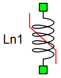
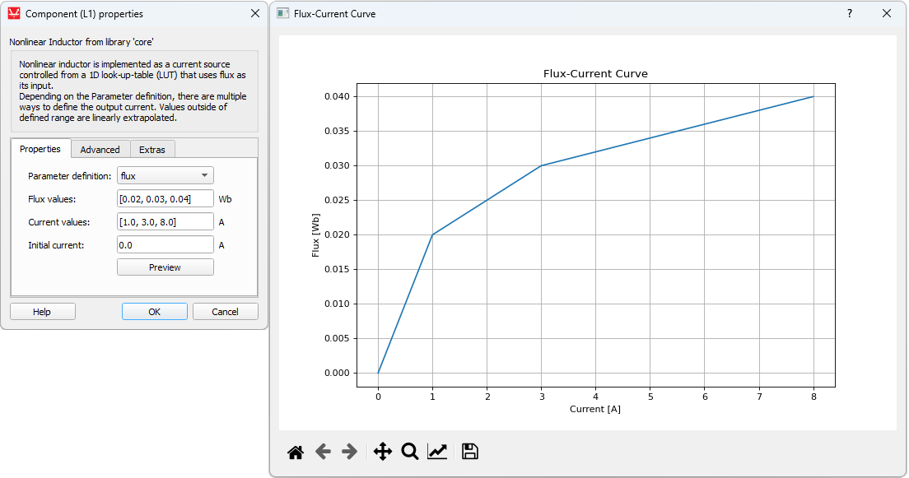
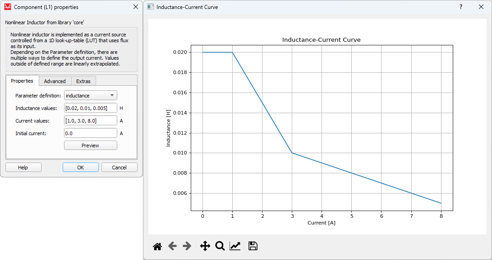
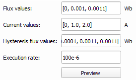
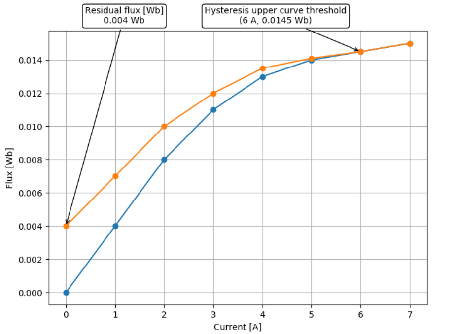
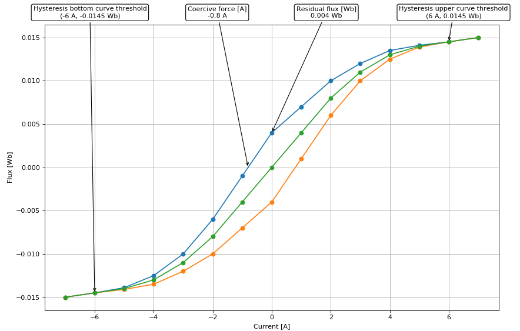
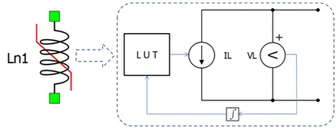

Nonlinear Inductor
Description of Nonlinear Inductor component in Schematic Editor

Nonlinear Inductor is implemented as a controlled current source from a 1D look-up-table (LUT) that uses flux as its input.
Saturation effects
The nonlinear inductor model can include magnetic saturation effects. Fluxes or inductances are defined as a function of the inductor current. Functions are represented in the form of lookup tables. Saturation type is specified with the Parameter definition property:
- flux
- inductance
- inductance(dΦ/di)
- hysteresis

Flux values [Wb]: [0.02, 0.03, 0.04]
Current values [A]: [1.0, 3.0, 8.0]
The flux method uses a user-defined flux-current curve. Linear interpolation is applied to the flux values between the defined points, while linear extrapolation is applied in case a current value is outside of the specified range.

Inductance values [H]: [0.02, 0.01, 0.005]
Current values [A]: [1.0, 3.0, 8.0]
The inductance method uses inductance and current vectors to calculate the fluxes, assuming that Φ = Li. It is assumed that the inductance is constant for currents that are less then the minimum specified current. Linear interpolation is applied to the flux vector values that are calculated based on provided inductance and current value.
The inductance (dΦ/di) method uses inductance and current vectors to calculate the fluxes, assuming that Φ =∫Ldi. It is assumed that the inductance is constant for currents that are less then the minimum specified current. Linear interpolation is first applied to the inductance vector values in order to ensure a continuous function L(i). This function is integrated in order to get the flux-current curve for the LUT.
The hysteresis method uses multiple different saturation curves which can be defined in the component properties. The current difference due to the hysteresis effect is injected in parallel with the nonlinear current coming from saturation effects, but according to the slower execution rate defined in the Execution rate property. Additional information on hysteresis calculation can be found in the Hysteresis effectsHysteresis effects section.
Hysteresis effects
Simulating hysteresis effects requires signal processing implementation. Therefore, an execution rate for hysteresis simulation must be specified. To capture this effect for an arbitrary dynamic signal, its period should be at least 20 times faster than the execution rate of hysteresis sampling, defined in Execution rate. Hysteresis is further defined through three lists/arrays which have different labels depending on the type of transformer or nonlinear inductor as shown in Figure 4.
To properly define hysteresis, the data value for both Flux values and Hysteresis flux values must be specified for the zero current data-point, which means that the first value of Current values and Flux values lists/arrays must be 0, and that the first value of the Hysteresis flux values list/array must be the remanent flux value. Secondly, all three of these properties must have the same number of elements and all three must be monotonically non-decreasing lists/arrays. Hysteresis flux values must have at least one element that is higher in value than the corresponding element in the Flux values list, followed by at least one element that has the same value as the corresponding element in Flux values. The first common element for Hysteresis flux values and Flux values is defined as the Hysteresis upper curve threshold.
Figure 5 demonstrates an example of properly defined parameter values using the settings below.
Flux values [Wb]: [0, 0.004, 0.008, 0.011, 0.013, 0.014, 0.0145, 0.015]
Current values [A]: [0, 1, 2, 3, 4, 5, 6, 7]
Hysteresis flux values [Wb]: [0.004, 0.007, 0.01, 0.012, 0.0135, 0.0141, 0.0145, 0.015]
Clicking the Preview button will validate the hysteresis parameters, but only if they are defined directly in the respective property fields and not if they are defined through the namespace. After validation, the Hysteresis curve will be extended, showing the expected simulation hysteresis curve as shown in Figure 6.

When the simulated flux value surpasses the Hysteresis upper curve threshold, the upper curve becomes the trajectory for the flux-current set-points and stays that way until the next trigger event. When the simulated flux value falls bellow the Hysteresis bottom curve threshold, the bottom curve becomes the trajectory for the flux-current set-points and stays that way until the next trigger event. When the simulation is first started, the original curve is a reference, until the next trigger event. A way to disable hysteresis and return the reference curve to the original magnetization curve during runtime, is to set the scada input named demagnetize_scada_in to 1. To re-enable the hysteresis upper and bottom curve, set the scada input demagnetize_scada_in to 0. Flux demagnetization to the reference curve is not supported in TyphoonSim yet.
Electrical circuit
In the electrical circuit, Nonlinear Inductor is represented as a current source. Voltage across the inductor is measured and integrated, the result of the integration being the inductor’s flux. Flux is used to address the LUT. The output of the look-up table is the inductor current which is fed to the controlled current source.

The snubber circuit can be added in parallel with the current source using the Enable snubber checkbox. Either the purely resistive R snubber or the R-C snubber can be chosen.
The DCM optimization property provides a possible optimization of the nonlinear inductor component in certain converter discontinuous conduction modes. When enabled, this property creates a linear inductor in parallel with a current source and modifies the current source to simulate only the saturation effects. Nonlinear inductor with this property disabled normally has a single simulation time step delay between the integrated flux and the current associated with it. Unlike a current source, linear inductor has no delay between the current and the voltage on its terminal, making it more responsive in linear operating points.
Ports
- p_node (electrical)
- Nonlinear inductor p node
- n_node (electrical)
- Nonlinear inductor n node
Properties (tab)
- Parameter definition
- Specifies type of inductor flux definition
- The following definition types can be specified - flux, inductance, inductance (dΦ/di) or hysteresis
-
Flux values
- Available if flux or hysteresis Parameter definition is selected
- Values of the flux vector
-
Inductance values
- Available if inductance or inductance (dΦ/di) Parameter definition is selected
- Values of the inductance vector
- Current values
- Values of the current vector
- Initial current
- Value of the initial current [A]
- Hysteresis flux values
- Available if hysteresis Parameter definition is selected
- Values of the hysteresis flux vector
- Execution rate
- Available if hysteresis Parameter definition is selected
- Rate of hysteresis curve sampling
Advanced (tab)
- DCM Optimization
 DCM Optimization is not supported in TyphoonSim yet. Enabling this property will not
affect TyphoonSim simulation at all.
DCM Optimization is not supported in TyphoonSim yet. Enabling this property will not
affect TyphoonSim simulation at all.- Available if flux, inductance, or inductance (dΦ/di) Parameter definition is selected
- Enables the discontinious conduction mode optimization
- Enable snubber
- Enables the component snubber
- Snubber type
- Available if Enable snubber is enabled
- Available types are R and R-C
- Resistance
- Available if Enable snubber is enabled
- Value of snubber resistance [Ω]
- Capacitance
- Available if Enable snubber is enabled and Snubber type is set to R-C
- Value of snubber capacitance [F]
- Enable dynamics snubber
- Available if DCM Optimization is disabled and Enable snubber is enabled
- Enables the dynamic snubber so that it is pressent in the circuit only when necessary
-
DCM Optimization is not supported in TyphoonSim yet. Enabling this property will not
affect TyphoonSim simulation at all.
Extras (Tab)
The Extras tab gives you the opportunity to set Signal Access Management for the component.
- Public - Components marked as public expose their signals on all levels.
- Protected - Components marked as protected will hide their signals to components outside of their first locked parent component.
- Inherit - Components marked as inherit will take the nearest parent 'signal_access' property value that is set to a value other than inherit.